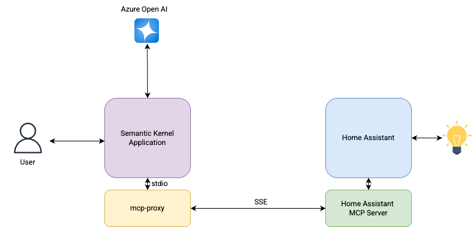

In this project, I developed a Python application that leverages Microsoft’s Semantic Kernel and Azure OpenAI to enable natural language interactions with Home Assistant. By integrating the Model Context Protocol (MCP), this solution allows users to control and query their smart home devices seamlessly.
The complete source code and detailed documentation are available in my GitHub repository: semantic-kernel-examples.
Overview of Semantic Kernel
Semantic Kernel is an open-source SDK developed by Microsoft that facilitates the integration of Large Language Models (LLMs) like Azure OpenAI into applications. It provides a framework to define plugins and functions that LLMs can invoke, enabling complex workflows and interactions through natural language prompts.
Key features include:
- Plugin Architecture: Encapsulate functionalities that can be invoked by LLMs.
- Function Calling: Allow LLMs to execute predefined functions based on user prompts.
- Memory Management: Maintain context over interactions for coherent conversations.
- Planner: Orchestrate multi-step tasks by decomposing user intents into actionable steps.
For more information, refer to the Semantic Kernel documentation
Architecture Diagram for the Project

The architecture diagram above illustrates the integration between Semantic Kernel and Home Assistant using the Model Context Protocol (MCP). Home Assistant exposes its MCP Server using Server-Sent Events (SSE) protocol, while Semantic Kernel’s MCP implementation supports Standard I/O (stdio). To bridge this gap, an MCP proxy is used to translate between these protocols. This proxy enables seamless communication between Semantic Kernel’s natural language processing capabilities and Home Assistant’s device control functionality, without requiring modifications to either platform.
How It Works
The agent uses:
- Semantic Kernel: To build a smart agent with plugin/function calling capabilities
- Azure OpenAI: For natural language understanding and generation
- MCP Plugin: To integrate with Home Assistant API
- Bidirectional Communication: For real-time interactions with your smart home
When a user inputs a command like “Turn on the office light”, the Semantic Kernel application begins processing the request. The natural language input is sent to Semantic Kernel, which uses Azure OpenAI to interpret the intent and understand the user’s request. If the intent is a home device control or status check, the Semantic Kernel utilizes a custom plugin called MCPStdioPlugin. This plugin serves as a bridge to Home Assistant by invoking a background process (mcp-proxy) that communicates over the SSE (Server-Sent Events) protocol. Based on the interpreted intent, the plugin selects the appropriate function, constructs a structured message and passes it to Home Assistant via the proxy. Home Assistant receives the message, carries out the corresponding action—like turning on the light—and returns a response. The Semantic Kernel application then displays a confirmation message back to the user, completing a seamless natural language interaction with the smart home.
Setup Requirements
You can setup this if you have home assistant at home. You will need the following:
- An Azure OpenAI resource
- Home Assistant server running the MCP integration (MCP Server can be installed as an add-on)
- Python environment to run the Semantic Kernal Python Application.
Home Assistant Configuration
To properly set up the integration with your Home Assistant instance:
Enable MCP Server Integration:
- Follow the official documentation at https://www.home-assistant.io/integrations/mcp_server/ to enable the MCP Server integration in your Home Assistant instance.
- The MCP Server generates a secure URL endpoint that the Semantic Kernel agent will connect to.
Select Devices for Assistants:
- In your Home Assistant UI, navigate to Settings → Assistants
- Select the devices you want to expose to the MCP Server integration
- Only selected devices will be accessible through the Semantic Kernel agent
Generate Long-Lived Access Token:
- In your Home Assistant UI, go to your profile (click on your username in the bottom left)
- Scroll down to “Long-Lived Access Tokens” section
- Click “Create Token”, provide a name (e.g., “Semantic Kernel Agent”)
- Copy the generated token immediately (it will only be shown once)
- Add this token to your
.envfile asHA_API_ACCESS_TOKEN=your_token_here
Example
.envfile:1
2
3
4
5
6
7AZURE_OPENAI_DEPLOYMENT_NAME=gpt-35-turbo
AZURE_OPENAI_ENDPOINT=https://<open api instance>.openai.azure.com/
AZURE_OPENAI_API_KEY=<Open API Key>
AZURE_OPENAI_CHAT_DEPLOYMENT_NAME=gpt-35-turbo
OPENAI_CHAT_MODEL_ID=gpt-35-turbo
HA_API_ACCESS_TOKEN=<Home Assistant Long Lived Token>Network Configuration:
- Ensure your Semantic Kernel agent can reach the Home Assistant MCP endpoint
- Update the
SSE_URLin these_agent_homeassistant.pyfile to match your Home Assistant instance URL - Set the proper
HA_API_ACCESS_TOKENin your environment variables or.envfile
Test Connectivity:
- Before running the agent, verify that your Home Assistant instance is accessible from the environment where you’re running the agent
Running the Agent
To run the agent, use the following command:
1 | python se_agent_homeassistant.py |
Then start interacting with your Home Assistant through natural language!
Example Interactions
Here are some examples of how you can interact with your smart home through this agent:
Querying Device Status:
1 | User > What's the status of the office light? |
1 | User > What's the temperature in the living room? |
Controlling Devices:
1 | User > Turn off the that light please |
Complex Queries:
1 | User > Which lights are currently on in the house? |